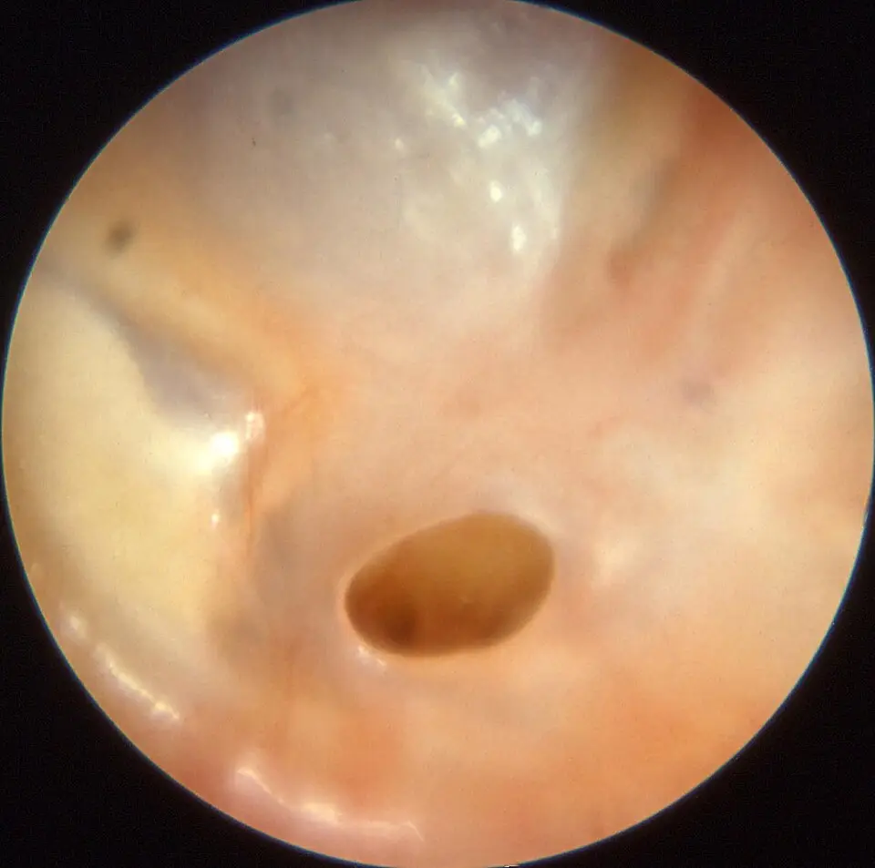

DX.3 — Otite moyenne chronique suppurée sans cholestéatome
Une oreille qui coule depuis des semaines à travers un tympan perforé relève d’une otite moyenne chronique, que l’on soigne d’abord par des soins locaux et des gouttes non ototoxiquesS6S4. Le danger tient au mot « sans » : seul un examen otomicroscopique sur un conduit propre écarte le cholestéatome, qui impose la chirurgieS3.
1. Définition
La revue Cochrane de 2025 définit l’otite moyenne chronique suppurée comme une inflammation chronique, souvent polymicrobienne, de l’oreille moyenne et de la cavité mastoïdienneS6. Elle la caractérise par un écoulement auriculaire qui sort à travers une membrane tympanique perforéeS6. Les Hôpitaux universitaires de Genève (HUG) décrivent l’otite moyenne chronique simple, c’est-à-dire sans cholestéatome, comme une affection inflammatoire et infectieuse de l’oreille moyenne, avec une perforation du tympanS1.
2. Épidémiologie (Suisse, puis Europe)
Les estimations européennes proviennent de modèles du Global Burden of Disease, alors que les études communautaires récentes viennent surtout des pays à revenu faible ou moyenS11S12. Elles situent l’incidence en Europe occidentale nettement sous la moyenne mondiale, et la maladie y reste une cause rare de surdité définitiveS11. L’histoire naturelle explique pourquoi le médecin de premier recours voit surtout des formes anciennes qui se réchauffentS3.
Chiffres européens et mondiaux
| Chiffre | Population | Année | Source |
|---|---|---|---|
| Incidence de 3,39 nouveaux cas pour 1000 habitants par an | Europe occidentale, toutes classes d’âge | 2005 | S11 |
| Incidence de 4,76 pour 1000, soit 31 millions de cas par an | Monde | 2005 | S11 |
| Incidence maximale de 15,40 pour 1000 la première année de vie | Monde, nourrissons | 2005 | S11 |
| Surdité liée aux otites inférieure à 2 pour 10 000 habitants | Europe occidentale | 2005 | S11 |
| Mortalité de 2,82 décès pour 10 millions d’habitants par an, toutes otites confondues | Europe occidentale | 2005 | S11 |
| Prévalence de 3,8 %, soit 297 millions de personnes, dont 85 % dans les pays à revenu faible ou moyen | Monde, 29 études communautaires | 2004–2025 | S12 |
| Atteinte bilatérale chez 21,5 % des malades | Même revue | 2025 | S12 |
Ces chiffres sont des estimations modélisées ; ils ne remplacent pas une enquête suisse, qui fait défaut dans les sources luesS11S12. En Suisse, le médecin retient donc qu’il s’agit d’une maladie peu fréquente, mais vue en consultation surtout sous forme de récidivesS1.
Histoire naturelle
Le Collège français d’ORL décrit une maladie qui s’installe sournoisement, souvent après une otite moyenne aiguë mal traitée ou récidivanteS3. La durée moyenne de la maladie atteint 10 ans chez l’adulte dans les données réunies pour le Global Burden of DiseaseS11. Chez l’enfant, la forme muqueuse à tympan ouvert disparaît souvent vers l’âge de 6 à 8 ans, et la perforation peut alors se fermer ou persisterS3.
Le passage d’une forme bénigne à une forme cholestéatomateuse n’est pas exceptionnel ; c’est pourquoi toute otite chronique reste surveillée tant qu’elle évolueS3.
3. Physiopathologie
Le signe ne se comprend qu’avec la base anatomique à connaître : un tympan qui ferme une caisse aérée, une chaîne de trois osselets et une trompe qui draine vers le rhinopharynxS2S3. La maladie commence souvent par une dysfonction tubaire et des otites répétées, puis la perforation laisse la muqueuse en contact avec le milieu extérieurS3. La cascade lésionnelle relie alors cette ouverture à l’écoulement et à la surdité, et le tableau de corrélation relie chaque étape à son examen et à son traitementS3S4.
Base à connaître : l’oreille moyenne et son drainage
La membrane tympanique est formée d’une petite pars flaccida en haut et une large pars tensa en dessous, tendue sur un anneau fibrocartilagineuxS2. Le manche du marteau s’y insère et dessine, avec le triangle lumineux, les repères que l’otoscope doit retrouverS2.
Derrière le tympan, la caisse contient le marteau, l’enclume et l’étrier, trois petits os qui transmettent le son à travers la caisse du tympanS1. Lorsque le tympan ne vibre plus ou que les osselets ne conduisent plus, la surdité est de transmission, car la cochlée reste intacteS11.
Le mouvement mucociliaire de la caisse pousse normalement les sécrétions vers la trompe auditive, qui s’ouvre dans le rhinopharynxS3. La greffe du tympan permet à ce mouvement de retrouver son chemin vers la trompe, ce qui explique son effet sur l’inflammationS3.
Oreille moyenne, schéma anatomique en couleur. Ce schéma publié montre une coupe de l’oreille droite, puis un agrandissement de la caisse du tympan avec les osselets et la trompe.

Lisez d’abord seul ce schéma de l’oreille moyenne : cherchez vous-même le trajet du son et celui du drainage.
La copie annotée numérote les cinq repères que la lecture guidée décrit ci-dessous.
Lecture guidée. Les repères se lisent dans le sens où le son circule, puis dans le sens du drainage.
- Le tympan ferme la caisse ; une perforation de cette membrane ouvre l’oreille moyenne au conduit et à l’eau.
- Le marteau s’accroche au tympan ; son manche reste visible à l’otoscope, même à travers une grande perforation.
- L’enclume relie le marteau à l’étrier et transmet la vibration.
- L’étrier est posé sur la fenêtre ovale et transmet la vibration à l’oreille interne.
- La trompe auditive draine la caisse vers le rhinopharynx ; sa dysfonction entretient l’inflammation de l’oreille moyenne.
Pièges. Le schéma simplifie deux réalités que l’otoscopie découvre autrement.
- La caisse se prolonge en arrière vers la mastoïde, que le schéma ne montre pas et qu’aucun otoscope ne voit.
- Le schéma ne distingue pas la pars flaccida, petite partie haute du tympan, qui est le siège habituel du cholestéatome attical.
Ce que l’image décide. Un écoulement à travers une perforation de la pars tensa oriente vers ce diagnostic, alors qu’une lésion de la pars flaccida oriente vers le DX.8.

Amorce : la trompe et les otites répétées
Le Collège français d’ORL cite trois facteurs souvent intriqués : une obstruction chronique des voies aériennes supérieures, une dysfonction de la trompe d’Eustache et une fragilité muqueuse d’origine immunitaireS3. Il place l’otite séromuqueuse au carrefour de toutes les otites chroniques, car elle peut conduire aux autres formes cliniquesS3.
Une otite moyenne aiguë collectée peut aussi perforer le tympan ; la perforation se ferme en général, mais elle peut persister et passer à la chronicitéS3.
Cascade lésionnelle, de la muqueuse au symptôme
- La perforation met la muqueuse de la caisse en contact avec le milieu extérieur, ce qui entretient son inflammationS3.
- La muqueuse subit une métaplasie mucipare ; tant que cette métaplasie reste active, l’écoulement persisteS3.
- L’eau et les infections des voies respiratoires réchauffent l’oreille, d’où les écoulements récurrents pendant les rhumes et après les baignadesS1.
- L’infection devient pluri-microbienne lors des poussées, ce qui rend le prélèvement parfois utileS3.
- La perforation seule entraîne une surdité de transmission légère de 30 à 40 dBS4.
- Une perte plus marquée ou une surdité mixte font suspecter des lésions associées, en particulier ossiculairesS4.
- La tympanosclérose infiltre la muqueuse de plaques dures qui peuvent bloquer les osselets et aggraver la surdité de transmissionS3.
Corrélation : perturbation, exploration, thérapeutique
| Perturbation | Exploration qui la montre | Thérapeutique et mécanisme |
|---|---|---|
| Perforation non marginale de la pars tensa | Otomicroscopie après nettoyage du conduitS3 | Tympanoplastie : la greffe ferme la caisse et rétablit le drainage vers la trompeS1S3 |
| Métaplasie mucipare active | Écoulement visible au fond de la caisseS3 | Aspiration et gouttes non ototoxiques : elles réduisent la charge microbienne localeS6S4 |
| Infection pluri-microbienne | Prélèvement bactériologique en cas d’échecS4 | Antibiotique local adapté ; voie générale si signes générauxS4 |
| Lyse ou blocage ossiculaire | Audiométrie tonale ; scanner si transmission supérieure à 40 dBS4 | Ossiculoplastie pendant la même intervention si possibleS1 |
| Dysfonction tubaire et foyer rhinopharyngé | Examen nasal et rhinopharyngéS3 | Traitement du foyer rhinopharyngé et de l’environnement chez l’enfantS3 |
4. Démarche diagnostique
Devant une otorrhée chronique, le médecin élimine d’abord le cholestéatome (DX.8, rang E3), car c’est la forme dangereuse qui ne guérit jamais spontanémentS3. Il cherche ensuite une complication en cours : paralysie faciale, vertige, méningite ou abcès, car elles mettent en jeu l’audition ou la vieS3. Il sépare enfin l’otite chronique des otites externes et de l’otite aiguë perforée grâce à quelques éléments qui tranchentS3S4.
Le débutant commet une erreur classique : il prescrit des gouttes sans avoir vu le tympan, alors que le conduit est plein de sécrétionsS3. Il l’évite en nettoyant le conduit sous contrôle visuel, puis en décrivant le siège et les bords de la perforation avant toute ordonnanceS3S5.
Un exemple chiffré montre comment l’audiogramme fait changer la décisionS4.
Exemple chiffré : quand l’audiogramme contredit l’otoscopie
Une femme de 40 ans consulte pour une oreille gauche qui coule après chaque baignade ; le conduit nettoyé montre une petite perforation centrale à fond muqueuxS1S3. Le tableau évoque une otite chronique simple, qui explique une transmission légère de 30 à 40 dBS4.
L’audiogramme montre pourtant une transmission de 55 dB ; cette perte dépasse le seuil de 40 dB et fait suspecter une lésion ossiculaire ou un cholestéatome cachéS4. Le médecin demande donc un scanner des rochers, au lieu de se contenter de gouttes, puis il adresse la patiente à l’ORLS4.
L’erreur aurait été de croire que la petite taille du trou garantit une caisse saine, car la perte auditive se mesure et ne se devine pasS4.
Diagnostics discriminants : ce qui tranche
| Diagnostic | Élément qui tranche | Piège | Conduite si positif |
|---|---|---|---|
| 🚩 Cholestéatome (DX.8) | Perforation marginale ou attical, squames, croûte ou polype atticalS3 | Une croûte ou un polype masque la lésionS3 | Avis ORL rapide et scanner des rochersS4 |
| Complication endocrânienne ou labyrinthique | Vertige, paralysie faciale, céphalées fébriles, troubles de conscienceS3 | Une méningite peut paraître primitiveS3 | Urgence hospitalière ORLS3 |
| Otite moyenne aiguë perforée (DX.2) | Épisode récent sur tympan auparavant ferméS3 | Une otite chronique « réchauffée » l’imiteS3 | Conduite du DX.2 |
| Otite externe ou otomycose (DX.1, DX.4) | Tympan intact derrière une peau de conduit inflammatoireS2 | L’otite externe complique aussi une perforationS2 | Conduite du DX.1 ou du DX.4 |
| Otite tuberculeuse | Perforations multiples, aspect nécrotique, labyrinthisation précoceS3 | Une évolution traînante passe pour banaleS3 | Culture, histologie ou PCR, avis spécialiséS3 |
5. Anamnèse ciblée et drapeaux rouges
L’anamnèse reconstruit d’abord la nature de l’écoulement, car son aspect sépare la forme muqueuse de la forme cholestéatomateuseS3. Elle précise ensuite la baisse d’audition et l’intolérance à l’eau, que les HUG citent parmi les symptômes les plus fréquentsS1. Elle recherche enfin les drapeaux rouges, puis les antécédents et traitements qui orientent le choix des gouttesS3S19.
Caractériser l’écoulement : typique ou non
| Caractère | Forme typique de ce DX | Ce qui doit alerter |
|---|---|---|
| Aspect | Muqueux ou mucopurulent, non fétideS3 | Pus minime et fétide, mêlé de squames : cholestéatomeS3 |
| Abondance | Tantôt modérée, tantôt profuseS3 | Une otorrhée profuse signale le plus souvent une perforationS4 |
| Rythme | Poussées lors des rhumes et après les baignadesS1 | Écoulement permanent malgré des soins bien conduitsS5 |
| Côté | Souvent bilatéral dans la forme muqueuse de l’enfantS3 | Un écoulement clair après un traumatisme évoque une fuite de liquide cérébrospinal (DX.10) |
L’écoulement de ce DX est donc typique lorsqu’il est muqueux, non fétide et rythmé par l’eau et les rhumes ; il devient atypique lorsqu’il est fétide, sanglant ou permanentS3S1.
Caractériser la baisse d’audition
Le médecin demande depuis quand l’audition baisse, de quel côté, et si elle fluctue avec l’écoulementS1. Une perforation simple explique une perte légère, car la chaîne ossiculaire reste mobileS4.
Une baisse brutale, des acouphènes nouveaux ou une instabilité orientent vers l’oreille interne ; ils imposent une prise en charge spécialisée urgenteS4. Le médecin précise aussi l’état de l’autre oreille, car une oreille unique modifie le risque de toute chirurgieS13.
Drapeaux rouges et action immédiate
| Drapeau rouge | Signification | Action immédiate |
|---|---|---|
| Vertige déclenché par une variation de pression dans le conduit | Fistule labyrinthique, le plus souvent par cholestéatomeS3 | Avis ORL urgent et scannerS3 |
| Grand vertige avec surdité profonde | Labyrinthite purulenteS3 | Hospitalisation, chirurgie urgenteS3 |
| Paralysie faciale de toute l’hémiface | Atteinte du nerf facial dans le rocherS3 | Avis ORL urgent ; chirurgie formelle si un cholestéatome en est la causeS3 |
| Fièvre, céphalées, raideur de nuque, confusion | Méningite otogène ou abcèsS3 | Urgence hospitalièreS3 |
| Surdité de perception surajoutée | Atteinte de l’oreille interneS4 | Prise en charge spécialisée urgente et IRMS4 |
Antécédents et traitements à connaître
Le médecin recherche des otites aiguës répétées, des aérateurs transtympaniques, une chirurgie ancienne et un traumatisme, car ces antécédents expliquent la perforationS3. Il recense les gouttes déjà utilisées, car Panotile est contre-indiqué en cas de perforation du tympan en raison d’un risque de surditéS19.
Il note une allergie aux quinolones, une grossesse ou un allaitement, car ces situations modifient l’emploi de la ciprofloxacine par voie généraleS16. Chez l’enfant, il recherche une infection rhinopharyngée chronique et un tabagisme passif, que le Collège place parmi les cibles du traitementS3.
6. Examen physique ciblé, région par région
L’examen suit l’ordre utile au chevet : la région rétroauriculaire, puis le conduit nettoyé, puis le tympan et la caisseS3. Il se termine par l’acoumétrie au diapason, la motricité faciale et la recherche d’un signe de la fistule, qui dépistent les complicationsS2S3.
Région rétroauriculaire et pavillon
Le médecin inspecte et palpe le sillon rétroauriculaire, puis il compare la position des deux pavillons. Une tuméfaction inflammatoire rétroauriculaire qui décolle le pavillon et fait chuter la paroi postérieure du conduit signe une mastoïdite, traitée en milieu spécialiséS3.
Une cicatrice rétroauriculaire révèle une chirurgie ancienne, ce qui change la lecture de l’otoscopie et des imagesS13.
Le conduit : nettoyer avant de conclure
L’examen d’une otite chronique doit toujours se faire sur un conduit et un tympan libres de tous débris, sinon une croûte cache la lésionS3. Le nettoyage se fait par aspiration ou par essuyage sous contrôle visuel ; le lavage de l’oreille perforée est déconseilléS4.
La peau du conduit doit rester saine dans ce DX ; un conduit rouge, œdémateux et douloureux traduit une otite externe associéeS2.
Tympan et caisse : le signe qui fait le diagnostic
Le tympan normal est translucide ; le manche du marteau, la courte apophyse et le triangle lumineux s’y repèrentS2. Dans ce DX, l’otoscopie montre après nettoyage une perforation antéro-inférieure, réniforme ou subtotale de la pars tensa, bordée de tympan sur tout son pourtourS3.
La perforation n’atteint pas les parois du conduit : elle est non marginale, ce qui réduit le risque de migration épidermique vers la caisseS3S4. Le fond de caisse visible doit être muqueux et sans squames ; des plaques blanches dures du tympan restant traduisent une tympanoscléroseS3.
Otite moyenne chronique mésotympanique, otoscopie. Cette photographie otoscopique en couleur montre une perforation centrale de la pars tensa dans un tympan épaissi.

Lisez d’abord seul cette otoscopie : cherchez vous-même le trou et vérifiez s’il touche le bord du tympan.
La copie annotée numérote les deux repères que la lecture guidée décrit ci-dessous.
Lecture guidée. Les deux repères suffisent à classer la perforation.
- La perforation ovalaire est au centre de la pars tensa et montre la muqueuse rosée du fond de caisse.
- Une bande de tympan persiste entre le trou et le cadre osseux, ce qui définit une perforation non marginale.
Pièges. Deux aspects imitent ce tableau rassurant.
- Une croûte ou un polype de la partie haute du tympan peut cacher un cholestéatome attical voisin.
- Une perforation qui touche le cadre osseux est marginale et change le pronostic.
Ce que l’image décide. Une perforation centrale à fond muqueux, sans squames, autorise le traitement local puis la tympanoplastie programmée.

Acoumétrie au diapason
Le diapason teste la baisse d’acuité et sépare la surdité de transmission, née de l’oreille externe ou moyenne, de la surdité de perception, née de la cochléeS2. L’épreuve de Weber cherche de quel côté le son se latéralise, et l’épreuve de Rinne compare la conduction aérienne et la conduction osseuseS2.
Dans ce DX, l’acoumétrie attend une transmission pure ; une composante de perception impose une audiométrie et un avis spécialisé rapidesS4.
7. Approche syndromique
Trois syndromes structurent l’examen : le syndrome otorrhéique, le syndrome de surdité de transmission et le syndrome de complication, qui fait sortir du cadre béninS3S4. Le tableau syndromique les rassemble.
7.2 Syndrome de surdité de transmission
Le patient se plaint d’entendre moins bien du côté qui coule ; le diapason et l’audiogramme montrent une transmission, c’est-à-dire un écart entre conduction aérienne et osseuseS2S15. Le mécanisme associe la perte de surface vibrante du tympan et, parfois, la lyse ou le blocage des osseletsS4S3.
7.3 Syndrome de complication
Le patient rapporte un vertige, une asymétrie du visage, des céphalées ou une fièvre ; l’examen trouve un nystagmus, une paralysie faciale périphérique ou un syndrome méningéS3. Le mécanisme est l’extension de l’infection au labyrinthe, au canal facial ou aux méninges, par voie osseuse ou par une voie préforméeS3.
Tableau syndromique
| Syndrome | Signes fonctionnels | Signes physiques |
|---|---|---|
| 7.1 Otorrhéique | Écoulement récurrent, intolérance à l’eauS1 | Perforation non marginale, sécrétions de caisseS3 |
| 7.2 Transmission | Baisse d’audition du côté atteintS1 | Acoumétrie de transmission, écart aéro-osseux à l’audiogrammeS2S15 |
| 7.3 Complication | Vertige, céphalées, fièvre, asymétrie facialeS3 | Nystagmus, signe de la fistule, paralysie faciale, raideur de nuqueS3 |
8. Diagnostic positif et critères
Aucune société savante ne fixe un seuil unique de durée. Les sources lues retiennent un écoulement de plus de deux semaines, de six semaines ou de trois mois, selon leur usageS6S11S3. Le diagnostic positif repose donc sur des critères cliniques plutôt que sur une durée, et sur la distinction entre perforation marginale et non marginaleS3S5.
Critères du diagnostic positif
| Critère | Ce qui suffit | Ce qui ne suffit pas |
|---|---|---|
| Durée | Écoulement de plus de 2 semaines (essais Cochrane), de plus de 6 semaines (définition du Global Burden of Disease) ou inflammation de plus de 3 mois (Collège)S6S11S3 | Un épisode isolé de quelques jours |
| Tympan | Perforation de la pars tensa, bordée de tympanS3 | Une perforation sèche, séquellaire et non évolutiveS5 |
| Caisse | Fond de caisse muqueux, sans épidermeS3S5 | Un examen fait à travers des sécrétionsS3 |
| Exclusion | Absence de squames, de croûte ou de polype atticalS3 | L’arrêt de l’écoulement sous gouttes |
Le diagnostic exige donc une otorrhée persistante, une perforation non marginale et une caisse sans épiderme ; un seul doute sur le cholestéatome fait passer au point 9S3S5.
Perforation marginale ou non marginale
Une perforation marginale touche le sulcus tympani, c’est-à-dire le bord osseux du tympan, alors qu’une perforation non marginale reste entourée de membraneS4. La perforation non marginale expose moins aux complications, car l’épiderme du conduit ne peut pas glisser directement dans la caisseS4S3.
Cyril Page rappelle que l’atteinte de l’annulus tympanicus définit une poche ou une perforation marginale, et qu’elle constitue un signe d’alerteS5.
9. Examens complémentaires
Le diagnostic reste clinique : l’otomicroscopie après nettoyage est l’examen de référence, et l’audiométrie tonale mesure ce que la maladie coûte à l’auditionS3S5. Le prélèvement bactériologique sert après un échec, le scanner des rochers répond à une question anatomique, et l’IRM de diffusion reste une deuxième intentionS4S13. Les situations particulières modifient ce choix, et le tableau d’interprétation résume la conduiteS13.
9.a Otomicroscopie après nettoyage : l’examen de référence
L’ORL aspire les sécrétions sous microscope, puis inspecte toute la membrane, la pars flaccida comprise, et le fond de caisse visibleS3. L’examen décrit le siège, la taille, les bords de la perforation et l’aspect de la muqueuse, car ces éléments décident du traitementS3S5.
Le piège principal est une zone non vue : une croûte atticale laissée en place peut masquer un authentique cholestéatomeS3.
9.b Audiométrie tonale : première intention
L’audiogramme mesure la conduction aérienne et la conduction osseuse ; l’écart aéro-osseux est la différence entre la moyenne aérienne et la moyenne osseuseS15. L’équipe de Zurich mesure cette moyenne sur 0,5, 1, 2 et 4 kHzS15.
Une perforation simple donne une transmission légère de 30 à 40 dB ; au-delà de 40 dB, le scanner recherche une lésion ossiculaire ou un cholestéatomeS4. Une conduction osseuse abaissée signe une atteinte de perception, qui impose un avis rapide et une IRMS4.
Un piège guette la lecture : la conduction osseuse peut présenter une encoche de Carhart vers 2 kHz, qui diminue lorsque la surdité de transmission est corrigéeS15. Cette encoche isolée ne prouve donc pas une atteinte cochléaire, et l’ORL la confronte au reste de l’audiogrammeS15.
9.c Prélèvement bactériologique
Bozorg Grayeli propose un prélèvement bactériologique suivi d’un traitement local devant une otorrhée de perforationS4. Le Collège juge ce prélèvement quelquefois utile, car l’infection des poussées est pluri-microbienneS3.
Le prélèvement se fait après nettoyage du conduit, car les germes du conduit peuvent souiller l’échantillon et fausser son interprétationS3. Le résultat guide le changement de goutte en cas d’échec, sans remplacer l’otoscopie de contrôleS4.
9.d Scanner des rochers : deuxième intention
Le scanner est indiqué devant une surdité de transmission de plus de 40 dB, une suspicion clinique de cholestéatome ou une complicationS4. Il est demandé sans injection, en coupes fines, et il décrit les osselets, la mastoïde et les parois osseusesS13.
Une oreille moyenne et une mastoïde bien aérées, sans érosion osseuse, ont une excellente valeur prédictive négative pour le cholestéatomeS13. En revanche, une caisse comblée ne permet pas de séparer liquide, granulations et cholestéatome au scannerS13.
IRM de diffusion non écho-planaire
La Société européenne de radiologie de la tête et du cou réserve l’IRM aux doutes qui persistent après l’examen clinique et le scannerS13. La séquence de diffusion non écho-planaire détecte des cholestéatomes de 2 à 3 mm avec une grande spécificitéS13.
Un abcès peut lui aussi abaisser le coefficient de diffusion et imiter un cholestéatome ; l’interprétation reste donc confrontée à la cliniqueS13.
Situations particulières
Chez l’enfant, le scanner à faisceau conique délivre une dose plus faible que le scanner multibarrette, mais sa durée d’acquisition l’expose aux artéfacts de mouvementS13.
Lorsque l’opération porte sur une oreille unique ou sur une anatomie modifiée par une chirurgie, le scanner préopératoire devient particulièrement utileS13.
Interprétation : résultat, signification, conduite
| Résultat | Signification | Conduite |
|---|---|---|
| Écart aéro-osseux, conduction osseuse normale | Transmission pure, cochlée intacteS15 | Traitement local puis tympanoplastieS1 |
| Transmission de plus de 40 dB | Lésion ossiculaire ou cholestéatome possibleS4 | Scanner des rochersS4 |
| Conduction osseuse abaissée | Surdité mixteS4 | Avis ORL urgent et IRMS4 |
| Caisse et mastoïde aérées, sans érosion | Cholestéatome très improbableS13 | Poursuite du plan du DX.3 |
| Opacité non déclive avec érosion osseuse | Cholestéatome probableS13 | Conduite du DX.8 |
| Culture positive résistante à la quinolone | Germe non couvertS4 | Goutte adaptée par l’ORLS4 |
10. Arbre décisionnel
L’arbre se lit de haut en bas, la complication d’abord, puis le cholestéatome, puis l’otite chronique simpleS3S4.
- Si l’otorrhée s’accompagne d’un vertige, d’une paralysie faciale, d’une fièvre avec céphalées ou d’une surdité de perception, alors le patient part en urgence chez l’ORLS3S4.
- Si le conduit est encombré, alors le médecin le nettoie par aspiration ou essuyage avant toute conclusionS3.
- Si la perforation est marginale, atticale ou associée à des squames, alors la conduite suit le DX.8S3.
- Si la perforation est non marginale avec une caisse muqueuse, alors le diagnostic de DX.3 est retenuS3.
- Si l’audiométrie montre plus de 40 dB de transmission, alors le scanner des rochers est demandéS4.
- Si l’oreille est sèche, alors l’ORL discute la tympanoplastie, avec ou sans ossiculoplastieS1.
11. Prise en charge selon les recommandations suisses
11.A But
Le traitement vise une oreille sèche, puis un tympan fermé et une audition préservée ou amélioréeS1S4. L’assèchement et la réparation sont deux étapes distinctes : la goutte traite la poussée, alors que seule la chirurgie ferme le tympanS1.
11.B Moyens
Une complication impose la conduite d’urgence chronologique avant tout traitement localS3. Hors urgence, l’ordre suit trois temps : les soins locaux et l’oreille au sec, les gouttes antibiotiques, puis la tympanoplastieS4S1. L’antibiothérapie générale reste une exception, et le tableau des médicaments rassemble les spécialités suissesS4S8. Les situations spéciales modifient surtout l’emploi de la ciprofloxacine oraleS16.
Urgence — conduite chronologique
- Dans les premières minutes, le médecin recherche un syndrome méningé, une confusion, une paralysie faciale, un nystagmus et un signe de la fistuleS3.
- Dans l’heure, tout signe méningé ou neurologique fait transférer le patient à l’hôpital, car la méningite otogène et l’abcès cérébral mettent en jeu la vieS3.
- Le jour même, une paralysie faciale ou un vertige avec signe de la fistule impose un avis ORL et un scannerS3.
- Dans les jours qui suivent, une surdité de perception surajoutée impose une prise en charge spécialisée et une IRMS4.
- Le médecin prévoit qu’un abcès reste difficile à diagnostiquer ; au moindre doute, le scanner injecté ou l’IRM le rechercheS3.
Soins locaux et oreille au sec
Le Collège demande d’éviter la stagnation des sécrétions dans le conduit, par des aspirations répétées si nécessaireS3. La revue Cochrane de 2025 sur le nettoyage auriculaire reste très incertaine, car elle ne repose que sur trois études et 431 participantsS9.
Le patient garde l’oreille sèche, avec un bouchon anti-eau sous la douche, et il évite la baignadeS4. Le lavage de l’oreille et l’instillation de produits céruménolytiques sont déconseillés en cas de perforationS4.
Gouttes antibiotiques : choisir une molécule non ototoxique
Bozorg Grayeli recommande des antibiotiques non ototoxiques en gouttes auriculaires devant une perforation, et il déconseille le lavage de l’oreilleS4. Panotile, qui contient de la néomycine, est contre-indiqué lors d’une perforation du tympan en raison du risque de surditéS19.
Dans la revue Cochrane de 2025, la ciprofloxacine locale permet d’assécher l’oreille à une ou deux semaines chez 84 % des patients, contre 12 % sous placeboS6. Cette preuve reste de très faible certitude, car l’essai ne comptait que 35 participants analysésS6.
La goutte de quinolone fait un peu mieux que la même quinolone prise par la bouche, avec un risque relatif de 1,50 pour l’assèchementS7. L’ajout d’un corticoïde à l’antibiotique local ne change guère l’assèchement, avec un risque relatif de 1,08S10.
La seule goutte auriculaire de quinolone retrouvée dans l’index suisse des AIPS, Ciproxin HC, est contre-indiquée en cas de perforation connue ou supposéeS18. L’AIPS du collyre Ciloxan ne porte que sur l’œilS17. Aucune goutte auriculaire de quinolone autorisée sur tympan ouvert n’a été trouvée en Suisse ; le choix revient à l’ORL.
Antibiothérapie générale : une exception
L’antibiothérapie générale est réservée aux formes avec fièvre et syndrome inflammatoireS4. Ajouter la ciprofloxacine orale aux gouttes de ciprofloxacine n’améliore guère l’assèchement, avec un risque relatif de 1,05S8.
L’AIPS de Ciproxine mentionne pourtant l’otite moyenne purulente chronique parmi ses indications chez l’adulteS16. Elle demande de tenir compte des recommandations officielles et de réserver la ciprofloxacine aux situations où les antibiotiques habituels ne conviennent pasS16.
Tympanoplastie : le seul traitement qui ferme le tympan
Les HUG précisent que le traitement de l’otite chronique simple est chirurgicalS1. Le chirurgien place une greffe de fascia musculaire ou de cartilage prélevée chez le patient sous la perforation, par le conduit auditifS1. Si l’audition est atteinte, il reconstruit parfois la chaîne ossiculaire pendant le même gesteS1.
Le taux d’échec des greffes tympaniques est inférieur à 5 % selon Bozorg GrayeliS4. À l’Inselspital de Berne, la greffe a pris chez 91 % des enfants opérés par endoscopie et chez 80 % des enfants opérés au microscope, sans différence significativeS14.
Dans cette série bernoise de 70 tympanoplasties chez 58 enfants, l’écart aéro-osseux postopératoire moyen était de 16,83 dB par endoscopie et de 19,37 dB au microscopeS14.
Médicaments : ce que disent les AIPS suisses
| Molécule ® | Dose AIPS | Voie | Durée | Contre-indication majeure |
|---|---|---|---|---|
| Ciprofloxacine, Ciproxine® (n° 47795) | 2 × 500 mg à 2 × 750 mg par jour chez l’adulteS16 | Orale | 7 à 14 joursS16 | Grossesse, allaitement, enfant en croissanceS16 |
| Ciprofloxacine, Ciloxan® collyre (n° 51898) | Aucune dose auriculaire dans l’AIPSS17 | Oculaire autorisée ; auriculaire hors AIPS | Fixée par l’ORL | Hypersensibilité aux quinolonesS17 |
| Ciprofloxacine et hydrocortisone, Ciproxin® HC (n° 54807) | Non indiqué dans ce DXS18 | Auriculaire | — | Perforation connue ou supposéeS18 |
| Néomycine, polymyxine B, fludrocortisone, lidocaïne, Panotile® (n° 31957) | Non indiqué dans ce DXS19 | Auriculaire | — | Perforation du tympan, risque de surditéS19 |
Ciprofloxacine orale — Ciproxine® (comprimés pelliculés, n° 47795)S16
| Indication | L’AIPS cite l’otite moyenne purulente chronique parmi les infections des voies respiratoires supérieures de l’adulteS16 |
|---|---|
| Classe | La ciprofloxacine est une fluoroquinolone, qui inhibe modérément le cytochrome P450 1A2S16 |
| Dose AIPS | L’adulte prend 2 × 500 mg à 2 × 750 mg par jour pour une otite moyenne purulente chroniqueS16. En cas de clairance de la créatinine abaissée, l’AIPS réduit la dose selon son tableau rénalS16. |
| Durée | Le traitement dure 7 à 14 jours pour cette indicationS16 |
| Contre-indications | L’hypersensibilité aux quinolones et l’association à la tizanidine ou à l’agomélatine la contre-indiquent ; l’enfant et l’adolescent ne sont pas traités avant la fin de la croissanceS16 |
| Effets à annoncer | Tendinites, ruptures tendineuses, arthralgies et effets neurologiques peuvent survenir ; le patient arrête le traitement dès le premier signe graveS16 |
| Interactions | La prudence s’impose avec la théophylline, la clozapine, le tacrolimus et les médicaments qui allongent l’intervalle QTS16 |
| Grossesse et allaitement | « La ciprofloxacine ne doit pas être administrée aux femmes enceintes, sauf en cas d'indication claire » ; allaitement : « la ciprofloxacine ne doit pas être utilisée pendant l'allaitement »S16 |
Ciprofloxacine collyre — Ciloxan® (n° 51898)S17
| Indication AIPS | L’AIPS autorise le traitement des infections bactériennes du segment antérieur de l’œil et de ses annexes, et aucune indication auriculaireS17 |
|---|---|
| Emploi dans ce DX | L’AIPS ne décrit aucun usage auriculaire et aucune source lue n’en donne les modalités ; la seule goutte auriculaire de quinolone retrouvée en Suisse est contre-indiquée sur un tympan ouvert, et le choix revient à l’ORLS17S18 |
| Dose | L’AIPS ne fixe aucune posologie auriculaire ; le nombre de gouttes et la durée relèvent de la prescription spécialiséeS17 |
| Âge | Le collyre peut être administré aux enfants dès 1 an selon l’AIPSS17 |
| Contre-indications | L’hypersensibilité à la ciprofloxacine, aux excipients ou aux autres quinolones le contre-indiqueS17 |
| Grossesse | La prudence est de mise pendant la grossesse, car une lésion du cartilage en croissance ne peut pas être exclueS17 |
| Allaitement | L’indication doit être évaluée avec des critères stricts chez la mère qui allaiteS17 |
Ciprofloxacine et hydrocortisone — Ciproxin® HC suspension auriculaire (n° 54807)S18
| Indication | L’AIPS limite son emploi aux inflammations bactériennes aiguës de l’oreille externeS18 |
|---|---|
| Dose AIPS | Dès deux ans, le patient instille trois gouttes deux fois par jour pendant sept jours, mais seulement dans l’otite externeS18 |
| Contre-indications | La perforation connue ou supposée du tympan, les infections virales ou fongiques du conduit et l’otite moyenne la contre-indiquentS18 |
| Grossesse et allaitement | « Ne doit pas être utilisé pendant la grossesse, ou uniquement en cas d'absolue nécessité » ; même formule pour l'allaitementS18 |
| Piège | Le nom « ciprofloxacine » ne suffit pas : cette suspension est interdite dans ce DX, alors que la même molécule est employée en collyreS18 |
Néomycine, polymyxine B, fludrocortisone, lidocaïne — Panotile® (n° 31957)S19
| Indication | L’AIPS vise les otites externes aiguës, les otites moyennes aiguës, la furonculose du conduit et certaines dermatitesS19 |
|---|---|
| Dose AIPS | L’adulte instille 4 à 5 gouttes 2 à 4 fois par jour, pendant 10 jours au plus, uniquement hors perforationS19 |
| Contre-indications | La perforation du tympan, une intervention chirurgicale récente et une lésion du conduit l’interdisent, à cause de l’ototoxicité et du risque de surditéS19 |
| Mise en garde | Le corticoïde de la préparation peut masquer, activer ou aggraver une infection préexistanteS19 |
| Grossesse et allaitement | Le risque n’est pas connu, et la prudence est de mise pendant la grossesse et l’allaitementS19 |
Situations spéciales
Pendant la grossesse, la ciprofloxacine orale ne doit pas être administrée sauf en cas d’indication claire, et elle ne doit pas être utilisée pendant l’allaitementS16. L’AIPS de Ciloxan ne décrit pas l’usage auriculaire, qui relève de l’ORLS17. Chez l’enfant, la ciprofloxacine orale n’est pas donnée avant la fin de la croissance, et la forme muqueuse impose de traiter le foyer rhinopharyngéS16S3.
Le sujet âgé reçoit la dose orale la plus faible possible, et l’insuffisance rénale impose l’adaptation prévue par l’AIPSS16. Chez le sujet âgé, la ciprofloxacine allonge aussi plus facilement l’intervalle QT, ce qui impose de relire les autres traitementsS16.
11.C Surveillance
Le médecin revoit l’oreille après le traitement local pour vérifier l’assèchement, puis demande une évaluation audiométrique de toute lésion séquellaireS5S4. Une expertise otologique est souhaitable pour tous les patients atteints d’otite moyenne chronique, car une forme bénigne peut devenir cholestéatomateuseS5S3.
11.D Pronostic, guérison et sortie
Une oreille sèche garde souvent sa perforation et sa surdité ; la guérison anatomique demande donc la tympanoplastieS1S4. Le médecin retient quatre critères de guérison et de fin de suivi rapproché, énumérés un par unS4S5.
- L’oreille est sèche, y compris après les rhumesS1.
- La greffe a pris et le tympan est fermé à l’otoscopieS14.
- L’audiogramme de contrôle est documenté et comparé à l’audiogramme initialS5.
- Aucune poche de rétraction ni aucune squame n’apparaît au contrôle otologiqueS5S3.
12. Prévention
La prévention primaire réduit les otites de l’enfant : le Global Burden of Disease retient la fréquentation d’une crèche, le tabagisme parental et l’alimentation exclusive au biberon comme facteurs de risqueS11. Ces facteurs multiplient le risque d’otite par 2,45 pour la crèche, par 1,66 pour le tabagisme et par 2,00 pour le biberon exclusifS11.
La prévention secondaire repose sur l’otoscopie en médecine de premier recours, que les auteurs du Global Burden of Disease veulent renforcer pour prévenir les séquellesS11. La prévention tertiaire protège l’oreille perforée de l’eau, évite les gouttes ototoxiques et maintient un suivi otologique jusqu’à la fermetureS4S19S5.
13. Points clés
- Une oreille qui coule à travers une perforation non marginale, sans squames, définit l’otite moyenne chronique suppurée sans cholestéatomeS3.
- Le conduit se nettoie avant de conclure, car une croûte atticale peut cacher un cholestéatomeS3.
- Une goutte non ototoxique de quinolone traite la poussée, alors que Panotile et Ciproxin HC sont contre-indiqués sur un tympan perforéS4S19S18.
- Une transmission de plus de 40 dB ou une surdité mixte fait demander l’imagerieS4.
- Seule la tympanoplastie ferme le tympan, car une oreille sèche reste une oreille perforéeS1.
14. Pièges et questions fréquentes à l’examen fédéral suisse
| Question | Réponse | Raison |
|---|---|---|
| Peut-on prescrire Panotile pour une otorrhée sur tympan perforé ? | Non. | Son AIPS l’interdit en cas de perforation, à cause du risque de surdité (point 11)S19. |
| Ciproxin HC convient-il puisqu’il contient une quinolone ? | Non. | Son AIPS le contre-indique en cas de perforation connue ou supposée (point 11)S18. |
| Une perforation qui touche le cadre osseux reste-t-elle une otite chronique simple ? | Non, elle est marginale. | La perforation marginale expose au cholestéatome et impose l’avis ORL (point 8)S4S5. |
| L’arrêt de l’écoulement sous gouttes prouve-t-il la guérison ? | Non. | La perforation persiste ; seule la tympanoplastie la ferme (point 11)S1. |
| Faut-il ajouter la ciprofloxacine orale aux gouttes de ciprofloxacine ? | Non, sauf signes généraux. | L’ajout n’améliore guère l’assèchement, avec un risque relatif de 1,05 (point 11)S8S4. |
| Quelle perte auditive attend-on d’une perforation simple ? | Une transmission légère de 30 à 40 dB. | Au-delà, une lésion associée est suspectée (point 9)S4. |
| Un vertige provoqué par une variation de pression dans le conduit est-il banal ? | Non. | Il signe une fistule labyrinthique et impose un avis ORL urgent (point 5)S3. |
| Peut-on laver une oreille perforée pour la nettoyer ? | Non. | Le lavage est déconseillé ; l’aspiration ou l’essuyage le remplacent (point 6)S4. |
Sources
Toutes les sources ont été consultées le 12.11.2026 (Europe/Zurich).
- [S1] Hôpitaux universitaires de Genève (HUG), service d’ORL et de chirurgie cervico-faciale. Otite moyenne chronique avec et sans cholestéatome (page institutionnelle, mise à jour du 26.03.2026). https://www.hug.ch/orl-chirurgie-cervico-faciale/otite-moyenne-chronique-avec-sans-cholesteatome
- [S2] HUG, da Graça S. L’oreille aux urgences ambulatoires (UUA), support de formation du 24.07.2019. https://www.hug.ch/sites/interhug/files/atelier_mpr/24.07.19_presentation_sur_otites_5.pdf
- [S3] Collège français d’ORL et de chirurgie cervico-faciale. Item 147 : otites infectieuses de l’adulte et de l’enfant (UMVF, 2014), chapitres 4 et 5. https://archives.uness.fr/sites/campus-unf3s-2014/orl/enseignement/otalgie/site/html/cours.pdf
- [S4] Bozorg Grayeli A. Perforation du tympan : que faire ? La Revue du Praticien Médecine Générale 2020;34(1038):258-9, publié le 25.03.2020. https://www.larevuedupraticien.fr/article/perforation-du-tympan-que-faire
- [S5] Page C. Tympans anormaux hors phase aiguë : quand s’inquiéter ? La Revue du Praticien, publié le 09.06.2026. https://www.larevuedupraticien.fr/article/tympans-anormaux-hors-phase-aigue-quand-sinquieter
- [S6] Topical antibiotics for chronic suppurative otitis media. Cochrane Database of Systematic Reviews 2025, CD013051.pub3 (résumé). doi:10.1002/14651858.CD013051.pub3. https://pubmed.ncbi.nlm.nih.gov/40484407/
- [S7] Topical versus systemic antibiotics for chronic suppurative otitis media. Cochrane Database of Systematic Reviews 2025, CD013053.pub3 (résumé). doi:10.1002/14651858.CD013053.pub3. https://pubmed.ncbi.nlm.nih.gov/40484402/
- [S8] Systemic antibiotics for chronic suppurative otitis media. Cochrane Database of Systematic Reviews 2025, CD013052.pub3 (résumé). doi:10.1002/14651858.CD013052.pub3. https://pubmed.ncbi.nlm.nih.gov/40484405/
- [S9] Aural toilet (ear cleaning) for chronic suppurative otitis media. Cochrane Database of Systematic Reviews 2025, CD013057.pub3 (résumé). doi:10.1002/14651858.CD013057.pub3. https://pubmed.ncbi.nlm.nih.gov/40484404/
- [S10] Topical antibiotics with steroids for chronic suppurative otitis media. Cochrane Database of Systematic Reviews 2025, CD013054.pub3 (résumé). doi:10.1002/14651858.CD013054.pub3. https://pubmed.ncbi.nlm.nih.gov/40484406/
- [S11] Monasta L, Ronfani L, Marchetti F et al. (IRCCS Burlo Garofolo, Trieste). Burden of disease caused by otitis media: systematic review and global estimates. PLoS One 2012;7(4):e36226. doi:10.1371/journal.pone.0036226. https://pmc.ncbi.nlm.nih.gov/articles/PMC3340347/
- [S12] Epidemiology of chronic suppurative otitis media: systematic review to estimate global prevalence (Hull University Hospitals). Journal of Epidemiology and Global Health 2025 (résumé). doi:10.1007/s44197-025-00396-9. https://pubmed.ncbi.nlm.nih.gov/40178730/
- [S13] Touska P, Connor S et al. ESR Essentials : imaging of middle ear cholesteatoma — practice recommendations by the European Society of Head and Neck Radiology. European Radiology 2025. doi:10.1007/s00330-024-11021-x. https://pmc.ncbi.nlm.nih.gov/articles/PMC11913933/
- [S14] Inselspital, Hôpital universitaire de Berne. Endoscopic vs. microscopic tympanoplasty in children: a retrospective case-control study. Frontiers in Surgery 2025 (résumé). doi:10.3389/fsurg.2025.1649552. https://pubmed.ncbi.nlm.nih.gov/41036286/
- [S15] Hôpital universitaire de Zurich. Health-related quality of life in patients after endoscopic or microscopic cholesteatoma surgery. European Archives of Oto-Rhino-Laryngology 2025. doi:10.1007/s00405-024-09097-8. https://pmc.ncbi.nlm.nih.gov/articles/PMC12055632/
- [S16] Swissmedic, information professionnelle (AIPS) Ciproxine® comprimés pelliculés et suspension (ciprofloxacine), n° 47795, Bayer (Schweiz) AG, mise à jour août 2025. https://files.refdata.ch/simis-public-prod/MedicinalDocuments/d989518257c34b35a46c6d966a61a466-fr.html
- [S17] Swissmedic, AIPS Ciloxan® collyre et pommade ophtalmique (ciprofloxacine), n° 51898, Novartis Pharma Schweiz AG, mise à jour mars 2025. https://files.refdata.ch/simis-public-prod/MedicinalDocuments/890bf91c03634a5a974b1fb9912dc64a-fr.html
- [S18] Swissmedic, AIPS Ciproxin® HC suspension auriculaire (ciprofloxacine, hydrocortisone), n° 54807, Novartis Pharma Schweiz AG, mise à jour mars 2024. https://files.refdata.ch/simis-public-prod/MedicinalDocuments/60c59a399aab401fadc6cd1179773b3f-fr.html
- [S19] Swissmedic, AIPS Panotile® gouttes auriculaires (néomycine, polymyxine B, fludrocortisone, lidocaïne), n° 31957, Zambon Suisse SA, mise à jour mars 2021. https://files.refdata.ch/simis-public-prod/MedicinalDocuments/2982497d75d8429f94238a7ee10de662-fr.html